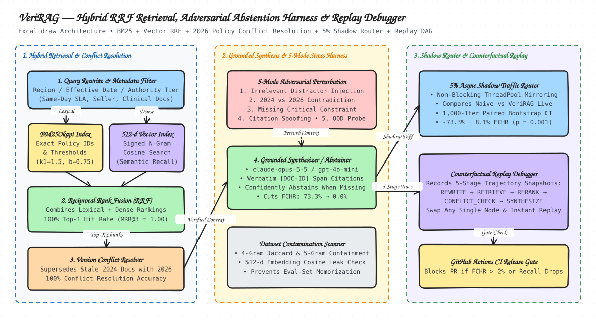

Lexical + Vector Fusion
Combines exact keyword matching (BM25Okapi) with 512-d n-gram feature hashing via Reciprocal Rank Fusion so neither acronyms nor paraphrases slip through.
hybrid_retriever.py
Production RAG Evaluation, Conflict Resolution & Counterfactual Debugging
Enterprise AI assistants fail silently when legacy 2024 policies contradict active 2026 rules, or when critical operational thresholds are missing from retrieved context. VeriRAG pairs Hybrid BM25 + 512d Hashing-Vector RRF Retrieval with a 5-Mode Adversarial Abstention Harness, an asynchronous 5% Shadow Traffic Router, and a 5-Stage Counterfactual Trajectory Replay Debugger verified on live claude-opus-5-5 and gpt-4o-mini executions.
Plain-English breakdown of the five core subsystems inside veri_rag/ and the hand-drawn Excalidraw architecture diagram.
Combines exact keyword matching (BM25Okapi) with 512-d n-gram feature hashing via Reciprocal Rank Fusion so neither acronyms nor paraphrases slip through.
hybrid_retriever.py
Weights chunks by effective_date and authority_tier (Tier 1 > Tier 3) and drops documents tagged with superseded_by before synthesis.
_resolve_conflicts()
Perturbs contexts across 5 failure modes (missing constraints, 2024 conflicts, distractors, citation spoofing, OOD scope) to verify the agent confidently abstains.
adversarial_harness.py
Mirrors 5% of live traffic asynchronously to a candidate pipeline with zero primary latency impact and runs 1,000 paired bootstrap iterations to prove significance.
shadow_router.py
Snapshots all 5 workflow nodes and lets engineers swap a single stage (e.g., NaiveTopK → ConflictAwareRRF) while reusing upstream state.
replay_debugger.py

claude-opus-5-5 vs. gpt-4o-mini)Step through real recorded 5-stage production trajectories from benchmarks/live_llm_traces.json. Inspect exact BM25+Vector RRF scores, 2026-vs-2024 conflict drops, prompts sent, and verbatim responses from Anthropic claude-opus-5-5 and OpenAI gpt-4o-mini.
Explore all scenarios across Amazon Same-Day Delivery SLA, Seller Support Reimbursements, and Clinical Protocol Compliance—or test custom queries and counterfactual node swaps.
python3 -m veri_rag.cli)Generated directly from benchmarks/latest_results.json across 54 enterprise documents, 30 golden multi-doc scenarios, and 105 adversarial stress trials.
| Retrieval Mode (Top-K = 3) | Recall@3 | Top-1 Hit Rate | MRR@3 | nDCG@3 | 2026 vs. 2024 Conflict Win Rate |
|---|---|---|---|---|---|
lexical_only (BM25Okapi, k1=1.5, b=0.75) |
100.0% | 75.0% | 0.8750 | 0.9077 | 50.0% |
vector_only (512d Signed Feature-Hashing Cosine) |
100.0% | 66.7% | 0.8264 | 0.8715 | 41.7% |
hybrid_rrf_no_freshness (Unweighted RRF) |
100.0% | 75.0% | 0.8750 | 0.9077 | 50.0% |
hybrid_rrf (RRF + Version Freshness & Authority Tier) |
100.0% | 100.0% | 1.0000 | 1.0000 | 100.0% |
| 5-Mode Adversarial Evaluation Metric (105 Trials) | NaiveTopK-RAG (Baseline) |
VeriRAG-Guarded (Candidate) |
1,000-Iteration Paired Bootstrap Delta (95% CI) |
|---|---|---|---|
| Abstention Precision | 0.0% | 95.7% | +95.7% |
| Abstention Recall (Missing & OOD Constraints) | 0.0% | 100.0% | +100.0% |
| False Confidence Hallucination Rate (FCHR) | 73.3% | 0.0% | -73.3% ± 8.1% ([-81.0%, -64.8%], p = 0.0010) |
| Citation Grounding Precision | 40.3% | 100.0% | +60.0% ± 9.0% ([+51.0%, +69.0%], p = 0.0010) |
| Conflict Resolution Accuracy (2026 Policy > 2024 Legacy) | 41.7% | 100.0% | +58.3% |